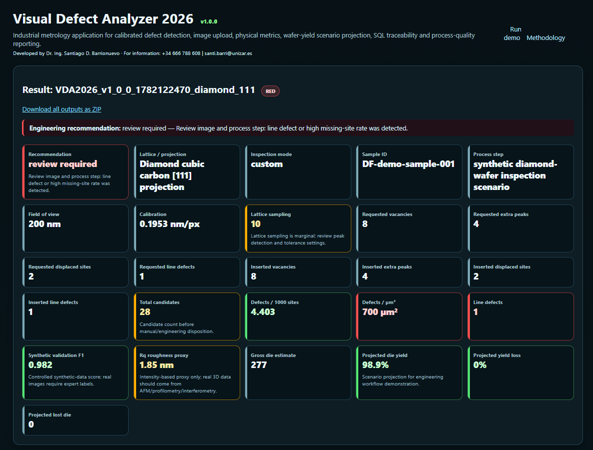
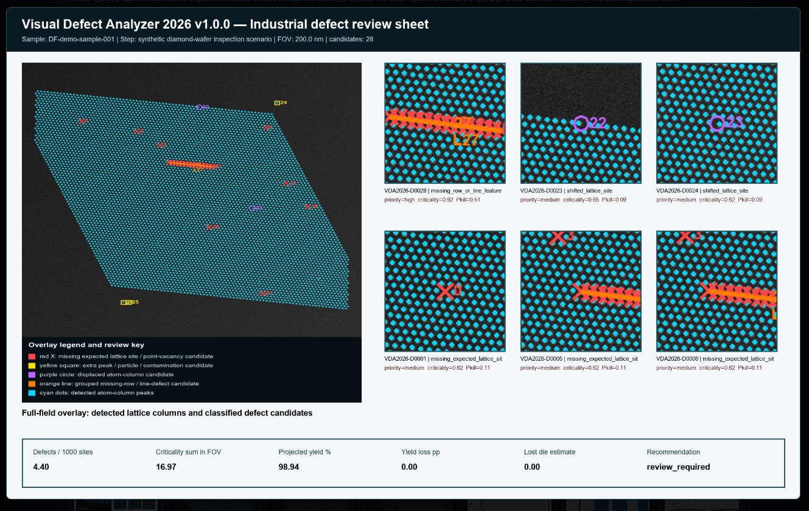
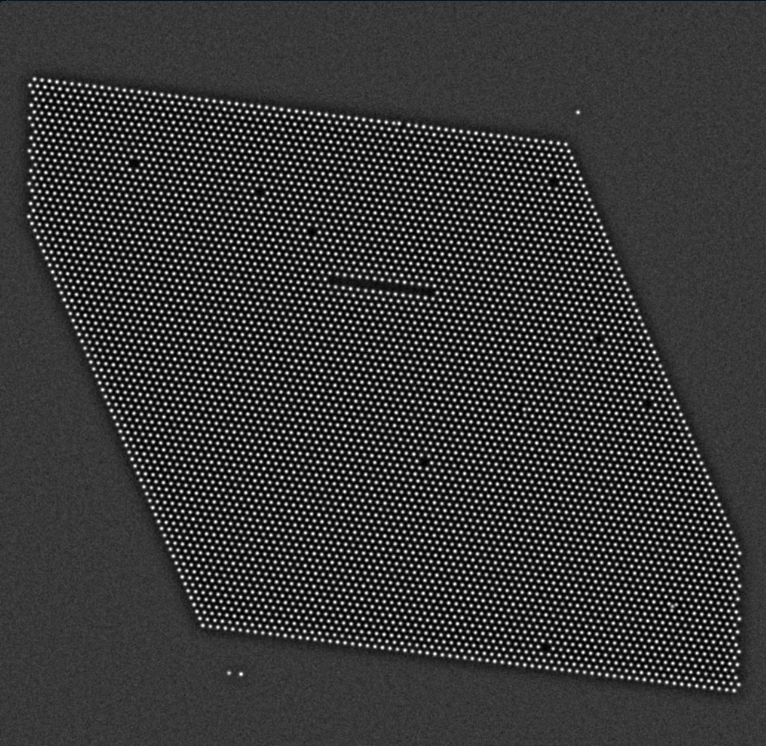

Defect detection
Point vacancies, extra peaks, displaced sites, line features and uploaded-image anomaly candidates for SEM/TEM/STEM/AFM-style images.
 Santiago D. BarrionuevoGraphene R&D · Metrology · Devices
Santiago D. BarrionuevoGraphene R&D · Metrology · Devices
Pioneering graphene-derived nanomaterials for novel electronics applications
PhD in Engineering, Electronic Engineer and AI developer working across CVD graphene, twisted bilayer graphene, graphene/carbon quantum dots, cleanroom workflows, advanced metrology, simulation and technical reporting.
New industrial metrology software
A Windows-testable application for calibrated defect detection, visual inspection, SQL traceability, wafer-yield scenario projection and process-quality reporting in advanced materials inspection workflows.
Visual Defect Analyzer 2026 demonstrates how a Python-based metrology workflow can connect image upload, calibrated defect detection, lattice inspection, visual review, SQL logging, defect manifests and wafer-yield scenario reporting in one practical tool.

Application dashboard with engineering status and calibrated metrics
Industrial defect review sheet with overlay, critical candidates and yield summary
Atom-column lattice example used for controlled defect detectionPoint vacancies, extra peaks, displaced sites, line features and uploaded-image anomaly candidates for SEM/TEM/STEM/AFM-style images.
Each run produces a defect manifest, engineering report, downloadable outputs and SQL-ready inspection records.
Inspection findings are translated into defect density, review priority and wafer-level yield-scenario indicators.
The prototype is designed to evolve toward real inspection datasets, expert labels, gauge R&R, SPC monitoring and model validation.
Professional positioning
I work across the chain from CVD growth, transfer, heterostructure assembly and cleanroom patterning to device integration, characterization, data interpretation and results dissemination. My materials portfolio includes CVD graphene, TBLG, GQDs, CQDs, graphene foams, graphene/metal nanohybrids and 2D heterostructures such as MoS2- and YIG-related stacks.
Target fit
Industry value
I connect process variables, defects, contamination, interfaces and spectroscopy/microscopy data to identify device-relevant performance issues and optimize reproducible workflows.
Research value
I translate graphene-derived nanomaterials into sensing, spintronic, neuromorphic, optoelectronic and electrochemical applications.
Methods
Raman, SEM, AFM, STM/STS, HRTEM, STEM-HAADF, EELS, XPS, UV-Vis, FTIR, electrochemistry, TDDFT/DFT and Python workflows.
About me
My research focuses on synthesizing and characterizing innovative graphene-derived nanomaterials, primarily using CVD graphene as a starting point. These materials show potential in water contaminant degradation, fluorescence-based ion detection, efficient photoanodes and electrochemical glucose sensing.
I developed twisted bilayer graphene from CVD graphene on Cu substrates using substrate chemical attack, enabling control over electronic properties through rotation-angle-dependent structures.
My work includes direct ethanol electrooxidation on Ni foam electrodes, yielding ultra-small CQDs around 2.8 nm rich in oxygenated groups for light-assisted dye degradation. Electrochemical exfoliation of 3D graphene on Ni foams produces GQDs with confined electrons, UV-Visible absorption and emission. Functionalized GQDs enable Hg2+ and Fe3+ sensing in water and wine, and they act as reducing agents for Au/Pt graphene nanohybrids used in electrocatalysis and glucose detection.
I use TDDFT/DFT models to simulate GQD optoelectronic properties, emission, absorbance and quantum confinement. The materials are characterized with advanced techniques such as HRTEM, EELS and STEM-HAADF to understand size, nanostructure and composition.
Research atlas
Use the search box and chips together. This version fixes the atlas filtering logic.
8 cards shown
Cu-foil and Ni-foam CVD graphene routes used as platforms for TBLG, GQDs/CQDs, graphene-metal nanohybrids and device-oriented workflows.
TBLG synthesis/transfer protocols from CVD graphene on Cu through substrate chemical attack, targeting rotation-angle-dependent electronic tuning.
Functional GQDs and CQDs for Hg2+/Fe3+ detection, water/wine analysis, dye photodegradation, optical response and confined-electron behavior.
Au/Pt graphene nanohybrids and core-shell systems for electrocatalysis, non-enzymatic glucose detection and electroactive platforms.
Exposure to graphene/YIG stacks, MoS2-related integration, Hall-bar/GFET-oriented layouts, sputtering, ion milling and direct-write lithography.
Raman, SEM, AFM, STM/STS, HRTEM, STEM-HAADF, EELS, XPS, UV-Vis and FTIR used to diagnose defects, interfaces, crystallinity and reproducibility.
Computational workflows to simulate GQD absorption/emission, interpret quantum confinement, compare with spectroscopy and guide material design.
H2020 MSCA-RISE work on graphene-based quantum materials and advanced sensing, plus competitive ELECMI accesses for TEM-EELS and UHV JT-STM/STS.
Professional experience
INMA (CSIC/UNIZAR), Zaragoza, Spain. Graphene/device integration for ULTIMATE-I and MELON, combining graphene-based nanomaterials and heterostructures with MoS2 and YIG, cleanroom processing, sputtering, ion milling, Hall-bar/GFET-oriented workflows, Raman, SEM, STM/STS, HRTEM, STEM-HAADF, EELS, XPS, UV-Vis and FTIR feedback.
INIFTA (CONICET-UNLP), Buenos Aires, Argentina. Designed, assembled, maintained and operated custom CVD equipment; developed CVD graphene, TBLG, GQDs, CQDs and graphene/metal nanohybrids; worked on sensing, photoanodes, photodegradation, electrocatalysis, glucose detection and TDDFT/DFT/Python workflows.
Universidad de Zaragoza, Spain. Advanced characterization of graphene nanostructures using HRTEM and EELS; synthesis/characterization of GQDs; development of transfer and cleaning procedures for ultra-clean graphene surfaces.
Universidad Nacional de La Plata. Two-Dimensional Nanomaterials: Graphene and Others — Production, Properties and Applications.
Universidad Nacional de La Plata. Teaching support, student guidance and educational material for nanotechnology and nanomaterials courses.
INFIQC, Córdoba, Argentina. XPS and Raman characterization of graphene nanostructures.
INIFTA, La Plata, Argentina. Research projects in nanomaterials and electronics.
Instituto Balseiro, Bariloche, Argentina. Photonic and microwave device design.
Research, projects and publications
9 publications shown
Barrionuevo, S. D.; Fioravanti, F.; Nuñez, J. M.; Muñeton Arboleda, D.; Lacconi, G. I.; Bellino, M. G.; Aguirre, M. H.; Ibañez, F. J. DOI: 10.1021/acs.jpcc.3c06871.
Llaver, M.; Barrionuevo, S. D.; Troiani, H.; Wuilloud, R. G.; Ibañez, F. J. DOI: 10.1016/j.talo.2023.100202.
Barrionuevo, S. D.; Fioravanti, F.; Nuñez, J. M.; Llaver, M.; Aguirre, M. H.; Bellino, M. G.; Lacconi, G. I.; Ibañez, F. J. DOI: 10.1039/D3TC01774E.
Melia, L. F.; Barrionuevo, S. D.; Ibañez, F. J. DOI: 10.1021/acs.jchemed.1c00879.
Llaver, M.; Barrionuevo, S. D.; Prieto, E.; Wuilloud, R. G.; Ibañez, F. J. DOI: 10.1016/j.aca.2022.340422.
Messina, M. M.; Barrionuevo, S. D.; Coustet, M. E.; Kreuzer, M. P.; Saccone, F. D.; dos Santos Claro, P. C.; Ibañez, F. J. DOI: 10.1021/acsanm.1c01295.
Gimenez, R.; Barrionuevo, S. D.; Berli, C. L. A.; Ibañez, F. J.; Bellino, M. G. DOI: 10.1016/j.matchemphys.2019.05.005.
Llaver, M.; Barrionuevo, S. D.; Nuñez, J. M. M.; Chapana, A.; Wuilloud, R. G.; Aguirre, M. H.; Ibañez, F. J. DOI: 10.1039/D3EN00702B.
Ventre, J.; Barrionuevo, S. D.; Nuñez, J. M.; Renna, A.; Aguirre, M. H.; Bellino, M. G.; Ibañez, F. J. DOI: 10.1002/chem.202501997.
More information: Google Scholar profile.
Education
Skills and expertise
Achievements
I have produced nanomaterials for electronic, environmental and analytical challenges using nanotechnology. I developed synthesis and characterization routes for graphene, TBLG, GQDs, CQDs and nanohybrids, contributing to device-oriented graphene materials and precise control over structure-property relationships.
Selected projects, funding and impact
Contact
Zaragoza, Spain · +34 666 788 608 · drsantiagobarrionuevo.com